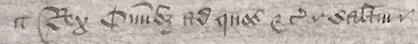

Methodology
Project History
This project was developed in two phases.
The first phase was undertaken in autumn 2019 as a collaborative professor-student project in the "Coding and Digital Archives" class at the University of Pittsburgh at Greensburg. The original website is still live (as of this writing) at https://brecon.newtfire.org/ on the server of Dr. Elisa Beshero-Bondar (now at Penn State Behrend). This initial iteration should be viewed as a "lab edition", one created not with a peer-reviewable output in mind but for the sake of learning how to use TEI and the XML stack to create such a project. I (William Campbell) would like to express my continued gratitude to Dr. Beshero-Bondar; to the students in the class who worked on the project, Amber Peddicord and Connor Chinoy; and to two other Pitt-Greensburg students, Jonah Elizabeth Jankovik and Alyssa Argento, who contributed to the transcription and coding aspects of the project, respectively. The project was continued by Peddicord and Argento in spring 2020 in Beshero-Bondar's class "Coding and Data Visualization", in which they used the project as a sandbox to experiment with creating data visualizations. The visualizations they created were no doubt valuable from the lab edition point of view, as learning exercises,and they remain part of the original newtfire.org site; but because they do not answer core questions relevant to this new version of the project, they have been relegated to subfolders in the new code repository.
The second, current phase of this project aims to bring the original work up to the standards expected of peer-reviewable academic work, and has been carried out by Campbell without additional student involvement. Three additional manuscript copies of the text being edited here were identified (those designated witnesses B, Y, and Z), and were added to the collation in 2023 and 2026 in a new version of the project's code repository (https://github.com/haggis78/brecon-2). Those collations originally contributed by students were checked for accuracy and corrected were appropriate. To think through editorial problems more carefully, Campbell completed Dr. David Vander Meulen's Rare Books School "Scholarly Editing" course in June 2026. The relaunched site includes revised XSLT stylesheets, which generate many of the web pages on the site from the TEI XML collation file, which you can view here.
As of this writing (July 2026), all aspects of the project and site are still in a state of development.
Research questions and goals
This is a pilot project. The initial impetus for this edition comes from a document that is not edited here: the medieval statute-book of St Davids Cathedral (British Library, Harley MS. 6280 and other copies). My long-term goal is to complete an edition of that text. The Brecon Letters Patent appear as an appendix in four manuscripts (our witnesses CDIO). By collating the copies of the Brecon charter, it is possible to establish the stemma codicum for that text and therefore the relationship among copies CDIO. A second goal, in the collation process, has been to think through the kinds of editorial issues and questions that arise only in the course of doing the work, such as how to deal with emendations made in the manuscripts themselves or orthographic patterns of no apparent significance. These determined what was marked up in the TEI XML and how. Finally, once the XML exists, it is possible to create XSLT stylesheets to transform it into a functionally unlimited variety of reading views with a relatively minor degree of effort. (For example, building on the foundations of earlier code in the project, the stylesheet that generated the critical edition reading view was about a day's work.) I welcome feedback on the features, utility, and user experience of the reading views. These are all possible first drafts for the structure of an eventual Statutes of St Davids digital edition.
Methodology and Research Process: First phase (2019)
The beginning of our research was greatly sped up by Dr. Campbell's research assistant, Jonah Jankovich, who in 2019 provided the transcription of witness W that was used as the base text for compiling the TEI XML. With this transcription, we were able to begin the process of deciding on our encoding process.
One of the first decisions that our team came to was the decision to follow the TEI guidelines. The TEI, or Text Encoding Initiative, is a set of rules that determine suitable ways to mark up textual documents. These rules specify which element tags are best to use for what document features, as well as which attributes are able to go with those elements. Essentially, the TEI is a community-accepted language for text encoding that helps to streamline and standardized digital markup projects. This standard was crucial to our research.
Because our project involved manuscript comparisons, we decided to use the TEI critical apparatus tool for our markup. This tool wraps any section of our document containing a textual variation between manuscripts in an <app> element. Inside of this element, it allows for reading witnesses to be coded for. These reading witnesses are indicated with <rdg> elements that have wit attributes to indicate which manuscript each variation follows.
At this point, we created an ODD for our markup. An ODD is a type of schema that customizes the TEI guidelines to fit each project. To create our ODD, we used the beta version of Roma JS, which allows the user to quickly and easily choose which TEI guidelines they want to apply to their project. This was done by deleting modules that were not relevant to the Brecon Project. Once we deleted any irrelevant modules, we saved the document as a .odd, a .html, and a .rng file. Then, we were able to begin making customizations that fit with the Brecon code. Within our ODD document, we made two notable customizations. First, we made changes that allowed for empty <rdg> tags when certain areas of text were missing from certain documents. Additionally, we specified which wit identifiers were allowed. These identifiers were single letters (or, sigla) specific to each manuscript, preceded by a hash symbol.
The team then met to decide on textual variations that we considered to be minor and/or insignificant. These included any variations between 'et' and '&', punctuation, and certain variations in orthography. For our project, significant variations included changes in wording and changes to spelling of words. These decisions allowed us to add more clarity to our goals and helped us to keep our source document as clean and organized as possible.
At this point, the team collated five manuscript copies (CDIOR) and the two additional printed witnesses (SJ). Below is an example of what some of these manuscripts looked like:

(Here we would like to express our thanks to The National Archives for allowing us to publish this image from Witness R. We do not have permission to publish images of the other manuscripts at this time.)
While collation was underway, the team also worked on site design. There are established conventions for critical editions in print, but while born-digital editions have been around for decades, there is not at this time a consensus as to the best way to present such material online. (This may be for the best: there is so much variation in the editorial problems presented by different texts that creating a uniquely suitable interface from the full range of digital affordances, while initially daunting, may often be the best way forward.) By using XSLT to transform the XML into HTML for the site, we created several reading views: one that allows the user to select any three witnesses, and compare them side-by-side in parallel columns; one that creates a separate page for each witness, so its text can be read on its own; and a direct transcription of the Chancery Patent Roll, witness R, with manuscript images, so a visitor could use it as a palaeography exercise.
As the team finished our XML markup, we were able to create our stemma using SVG. At the same time, other members of the team were working on our SVG Timeline that works through Javascript. From here, our website started to come together. The team began to work on enhancing the People, Glossary, and History pages of the site. Campbell was then able to analyze patterns of variants to test and refine the stemma.
Methodology and Research Process: Second phase (2026)
In 2021, I (Campbell) visited the National Archives of the United Kingdom and located witnesses Y and Z, which I had hypothesized but not known to exist. I also searched the Willis manuscripts at the Bodleian Libary in Oxford for the copy or draft he had used in printing witness W, but without success. In 2026 I also became aware of witness B. These three additional copies were collated into the XML. The site was also re-launched at this time using GitHub Pages. Previous XSLT stylesheets were revised, the site menu and file structure were updated, and the process of rewriting many pages on the site was begun.
In the intervening years, I had worked with colleagues on the Parlamentos Project (current site parlamentos.pitt.edu/, and GitHub repo here) and continued to teach XML-stack coding to students. This further experience equipped me to write the XSLT to generate the critical edition reading page. Certain features of the reading views that emerged as artifacts of code decisions made back in 2019 are discussed further there.